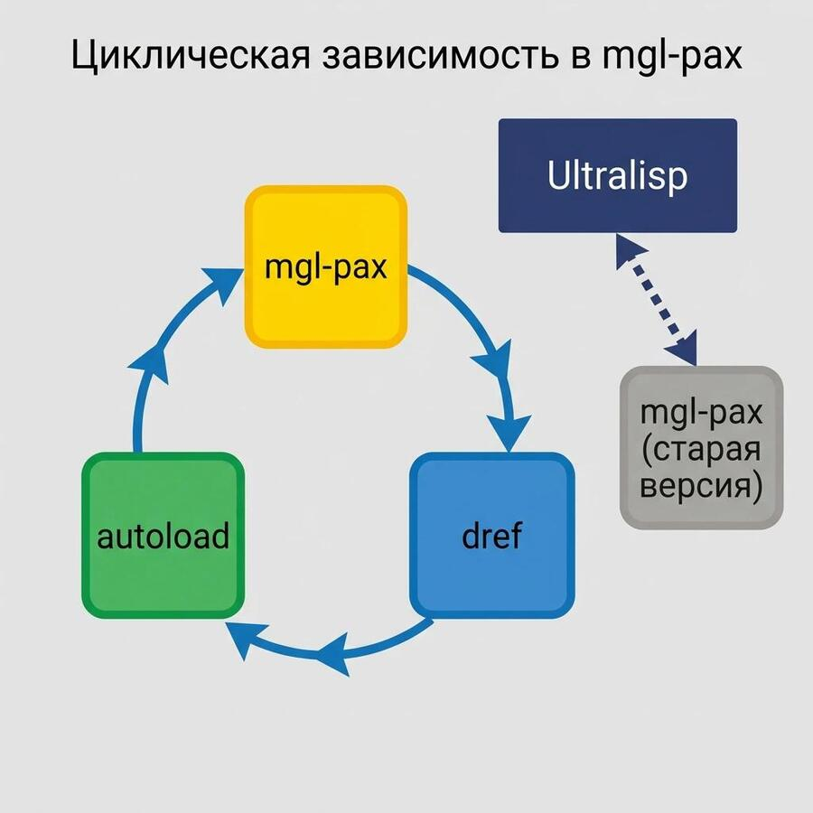

Posts with tag "commonlisp"
Common Lisp & Hardware Security
posted on 2026-10-04

Сегодня наткнулся на ещё одно интересное применение Common Lisp — SDK KeyNub для работы с аппаратным USB-ключом. Такой ключ хранит лицензию и нужен для использования коммерческого ПО. Получается, что можно на Common Lisp писать софт, для использования которого потребуется такой вот hardware-ключ.
Maxima скомпилировали для запуска в браузере!
posted on 2025-01-29
Maxima это программа для работы с математическими выражениями. Примечательно то, что эта система написана на Common Lisp.
Бегущий в лабиринте
posted on 2025-12-09
В двух предыдущих постах я описывал, как решал первую задачу из отборочного этапа хакатона МТС True Tech Champ.
Всего в отборочном этапе было три задачи. Сегодня расскажу о второй. В ней нужно было провести робота по лабиринту. Причем робот должен был дойти от угла лабиринта до его центра. Раз так, значит банальное правило левой или правой руки могло и не помочь, потому что с ним робот мог ходить по внешней стене до бесконечности.
Более быстрый робот в первом задании MTS True Tech Champ
posted on 2025-11-20
Как я писал в предыдущей заметке, первая моя попытка провести робота через две комнаты из первого задания хакатона МТС True Tech была неудачной. Робот ехал медленно и сбивался с пути. Но в какой-то момент один из участников подсказал мне в чате, что нужно действовать иначе.
В чём сложность форматирования кода на Lisp?
posted on 2026-09-16

В нынешние времена, когда большую часть кода пишут LLM, особенно остро встаёт проблема форматирования. Нейронки часто с этим косячат — особенно с отступами. В идеале перед коммитом они должны одной командой приводить все изменённые файлы к принятому в проекте формату.
Демка нового поиска на Ultralisp
posted on 2026-05-05
Демка нового поиска на Ultralisp.org
Не так давно я обновил Ultralisp и сделал там поддержку фреймворка reblocks-ui2, а теперь настало время очередных изменений. Вчера я выкатил обновленный поиск. Если раньше поиск по Ultralisp находил только символы и искал он по докстрингам этих символов, то теперь поиск работает также по ASDF системам и по проектам.
Жизненные уроки
posted on 2026-04-18
Последнее время я вернулся к работе над своим проектом кодового ассистента. Идея в том, чтобы сделать такого ассистента, которого можно расширять и интерактивно отлаживать в процессе его работы. Конечно, я его делаю на CommonLisp, но многие вещи делаю с помощью другого кодового ассистента - OpenCode. Мой проект, кстати, называется Codabrus. Если интересно, подписывайтесь на обновление этого проекта на GitHub, ставьте ему звездочки, шерьте с друзьями.
Зачем мне CLOS объекты как состояние акторов в Sento?
posted on 2026-05-11
На этой небольшой демке хочу показать, как я собираюсь использовать CLOS-объекты как состояние акторов в моем кодовом ассистенте Кодабрус. Для реализации акторов я использую библиотеку Sento, а CLOS-объекты в качестве состояния мне нужны для того, чтобы это состояние можно было сериализовать на диск и потом продолжить работу системы с того же места, на котором остановился пользователь.
Итерация которую можно прервать
posted on 2026-05-16
Итерация которую можно прервать. С акторами не всё так просто.
Вот вам небольшая демка того, как в системе акторов можно реализовать итерацию таким образом, чтобы её можно было безопасно прервать. Я собираюсь использовать этот подход для того, чтобы организовать работу с код-ассистентом и тулами, которые он запускает. Это нужно сделать так, чтобы код-ассистента можно было прервать в любой момент и сделать это безопасно.
Итерация которую можно прервать
posted on 2026-05-16
Итерация которую можно прервать. С акторами не всё так просто.
Вот вам небольшая демка того, как в системе акторов можно реализовать итерацию таким образом, чтобы её можно было безопасно прервать. Я собираюсь использовать этот подход для того, чтобы организовать работу с код-ассистентом и тулами, которые он запускает. Это нужно сделать так, чтобы код-ассистента можно было прервать в любой момент и сделать это безопасно.
Как продвигаются дела с MCP фреймфорком для Common Lisp
posted on 2025-06-29

Привет, друзья! Сегодня хочу дать небольшой апдейт по тому, как продвигаются дела с MCP-фреймворком для того, чтобы можно было писать MCP-сервера на Common Lisp.
Как проходил полуфинал MTS True Tech 2025
posted on 2026-01-01
Итак, рассказываю, как проходил полуфинал MTS TrueTech в 2025 году. Полуфинал заключался в том, что нам нужно было написать софт, который бы управлял реальным роботом так, чтобы робот мог пройти лабиринт из одного угла в противоположный. При этом структуру лабиринта, по которому будут запускать робота, мы не знали.
Как работает AI ассистент
posted on 2026-05-31
В прошлом посте я писал о том, что хочу в качестве эксперимента сделать визуализацию работы своего кодового ассистента Codabrus.
Красота для LispWorks
posted on 2025-01-31

Когда я впервые увидел LispWorks IDE, она показалась мне довольно непривычной и допотопной что ли. Там нет многих привычных вещей из Emacs. Но оказывается, если приложить усилия, то можно сделать из этого IDE конфетку. Но вероятно надо быть прямо очень мотивированным к тому, чтобы писать код именно в интерфейсе LispWorks, а не подключившись к нему из Emacs.
Некоторое время назад один из коллег опубликовал свою поделку, которая...
posted on 2026-04-02

Некоторое время назад один из коллег опубликовал свою поделку, которая показывает, сколько осталось квоты на использование нейросетей. Она была написана на Python с отдельной библиотекой для встраивания в тулбар на OS X. Я подумал, что это хороший проектик, чтобы попробовать переписать его на Common Lisp с помощью нейросетей.
Первый этап хакатона МТС True Tech Champ 2025
posted on 2025-11-16
Как и обещал, начинаю серию постов про хакатон MTS True Tech 2025. Это технический хакатон, который разделен на две части. Первая часть алгоритмическая, а вторая часть робототехническая. Участвовать можно только в какой-то одной. Я решил попробовать себя в робототехнике. При этом опыта на момент старта было примерно ноль. Никогда раньше ничего не делал для роботов и было очень интересно попробовать.
Портируем microGPT на Common Lisp с помощью LLM
posted on 2026-03-14
Смотрите чего я навайбкодил: https://github.com/40ants/microgpt
Это порт на Common Lisp скрипта microgpt, который недавно опубликовал Andrej Karpathy.
Почему я использую package-inferred ASDF стиль в своих библиотеках
posted on 2025-08-24
C package-inferred ASDF, тебе не надо задумываться о том, какие зависимости есть между твоими файлами. Точнее задумываеться конечно надо, но исключается ситуация, когда ты прописал их в неправильном порядке.
Например, если ты добавляешь в один из файлов использование символа, который определен в другом файле как функция, то нужно поменять местами эти модули в описании ASDF системы.
Собираюсь использовать в Codabrus визуализацию работы AI ассистента
posted on 2026-05-28
Хочу сделать в своем AI-ассистенте Codabrus визуализацию того, как работает AI-ассистент. Традиционные кодовые ассистенты показывают интерфейс в виде чата. Я же хочу сделать некую диаграмму, которая каждое сообщение от ассистента и от пользователя будет показывать в виде отдельного блока. Вызовы тулов будут ответвлениями, а также, наверное, будет прикольно подобным же образом визуализировать запуски сабагентов.
Современный i18n с Fluent
posted on 2025-08-17
Периодически я просматриваю новые библиотеки, которые добавляются в репозиторий https://ultralisp.org. Недавно мне попалась Common Lisp библиотека для интернационализации программ на Common Lisp. Она называется Fluent.
Циклическая зависимость в mgl-pax
posted on 2026-04-19

В эти выходные решал проблемку с отвалившейся named-readtables на UltraLisp.
Named-readtables библиотека довольно много где используется, и то что она стала недоступна - большая проблема.
Шпаргалка по использованию Roswell и Qlot в Common Lisp проектах
posted on 2025-02-16

Вчера в телеграм-чате LispForever, посвященном Сommon Lisp просили подсказать, какой подход лучше использовать для запуска лиспа. Мнения разделились. Кто-то рекомендовал использовать Roswell, кто-то наоборот - был против. Я же Roswell люблю по той причине, что он позволяет легко и просто устанавливать разные реализации Common Lisp и переключаться между ними. Это особенно удобно, когда у тебя куча проектов, и каждый может использовать свою версию CL.
This blog covers commonlisp, llm, codabrus, ai, codeassistant, clos, actors, learning, news, automation, voice, projects, git, tools, holism, zerocoder, python, aider, cursor, project, i18n, poftheday, visualization, closed, tips, seo, telegram, bot, прототип, smarthome, yandexcloud, logging, ideas, experiment, software, thoughts, programming, hackathon, mtstruetech, robotics, web, github, problems, salebot, bots, notes, emacs, macos, lisp, failures, infrastructure, lispworks, life, идеи, mcp, raspberrypi, security, opensource, sql, nix, ultralisp, tutorials, reblocks, yandex, cloud
Created with passion by 40Ants